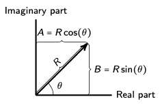

Lecture 14: General solutions (multivariate)
Lecture overview
1. Linear multivariate models
Discrete time
Let's investigate the dynamics of a linear system of equations in more than one variable in discrete time.
If there are \(n\) variables, then there will be \(n\) equations:
e.g., in a predator-prey model \(n=2\) because we track both the number of predators and the number of prey.
Because the equations are linear, we can also write these equations in matrix form:
becomes
which becomes
To find out where the population will be at some generation \(t\) we can use the equation \(\vec{x}(t+1) = \mathbf{M} \vec{x}(t)\) over and over again:
In most cases, it will be hard to find out what \(\mathbf{M}^t\) equals directly but we can use what we know about eigenvalues and eigenvectors to help.
Remember the equation for the eigenvalues and right eigenvectors
For our \(n\)-dimensional model, there will be \(n\) eigenvalues and eigenvectors that satisfy this equation (provided \(\mathbf{M}\) is not defective).
We can write all \(n\) of these equations in matrix form
where the columns of \(\mathbf{A}\) are the right eigenvectors and
is a diagonal matrix of the eigenvalues.
Now multiply this equation by \(\mathbf{A}^{-1}\) on the right
Now, we can write
And this is great because \(\mathbf{D}\) is a diagonal matrix, meaning \(\mathbf{D}^t\) is easy to calculate.
Specifically
It would not have been so easy to find \(\mathbf{M}^t\)!
This enables us to write the {\it general solution} to the recursion equations
Note that \(\mathbf{A}^{-1}\) is a matrix whose rows are the left eigenvectors of \(\textbf{M}\), which can be seen by deriving \(\mathbf{M} = \mathbf{A} \mathbf{D}\mathbf{A}^{-1}\) starting with the equation for the left eigenvectors \(\vec{u}\mathbf{M}=\lambda\vec{u}\).
And now we see why our stability analyses work!
Only if all the eigenvalues have an absolute value less than one, \(|\lambda_i|<1\), will all entries of \(\mathbf{D}^t\) decay to zero and hence \(\vec{x}(t)\) decay to \(\vec{0}\) (the equilibrium) as time goes to infinity.\
Further, as time goes to infinity \(\mathbf{D}^t\) will be dominated by the eigenvalue with the largest absolute value, which we call the \textbf{leading eigenvalue}.
To see this, let the leading eigenvalue be \(\lambda_1\) and factor it out of \(\mathbf{D}^t\)
Since \(|\lambda_i/\lambda_1|<1\) for all \(i\), for large \(t\) these all go to zero and we have
We can then approximate \(\vec{x}(t)\) as \(\tilde{\vec{x}}(t) = \mathbf{A}\tilde{\mathbf{D}}^t\mathbf{A}^{-1}\vec{x}(0) = \lambda_1^t \vec{v}_1 \vec{u}_1 \vec{x}(0)\).
This means that
- \(\vec{n}(t)\) will grow like \(\lambda_1^t\), where \(\lambda_1\) is the leading eigenvalue
- \(\vec{n}(t)\) will approach the right eigenvector associated with the leading eigenvalue, \(\vec{v}_1\)
- \(\vec{n}(t)\) is weighted by a constant, \(\vec{u}_1 \vec{x}(0)\), describing the initial size of the system,
where \(\vec{u}_1\) is the left eigenvector associated with the leading eigenvalue
NEED TO ADD SAME PLOTS FROM LECTURE 11 HERE
In this way the eigenvectors form a new, more convenient, coordinate system.
We transform into this new coordinate system with \(\vec{y}(t) = \mathbf{A}^{-1}\vec{x}(t)\).
And we transform back into our original coordinate system with \(\vec{x}(t) = \mathbf{A}\vec{y}(t)\).
We then have
Voila! In the new coordinate system we just move along each axis by a factor \(\lambda_i\), as we saw in the previous graph.
The final complication to discuss is complex eigenvalues.
Specifically, what is \(\lambda^t\) when \(\lambda = A + B i\)?
To do this, we can first use some simple geometry on the complex plane to show that any complex number can be written
where \(R = \sqrt{A^2 + B^2}\) is the magnitude of \(\lambda\) and \(\theta = \arctan(B/A)\) is the angle between \(\lambda\) and the horizontal axis.

We then use Euler's equation, \(\cos(\theta) + i \sin(\theta) = e^{i \theta}\), to write
And we can now take powers of \(\lambda\)
Continuous time
Now let's end by considering linear multivariate models in continuous time.
Given that \(\frac{\mathrm{d}\vec{x}}{\mathrm{d}t} = \mathbf{M} \vec{x}\) the general solution is simply \(\vec{x}(t) = e^{\mathbf{M}t}\vec{x}(0)\).
But \(e^{\mathbf{M}t} = \sum_{i=0}^{\infty} \mathbf{M}^i t^i / i!\) is complicated!
Fortunately we can use the same transform as in the discrete time case to write \(e^{\mathbf{M}t} = \mathbf{A} e^{\mathbf{D}t} \mathbf{A}^{-1}\).
This is much simpler because
When we have complex eigenvalues we again use Euler's equation
Our general solution is then \(\vec{x}(t) = \mathbf{A} e^{\mathbf{D}t} \mathbf{A}^{-1}\vec{x}(0)\).
2. Summary
So summarizing our overview on finding general solutions to linear multivariate systems
- it may be difficult to iterate/exponentiate matrix \(\textbf{M}\) to determine how a linear system of equations changes over time
- we can transform our equations into a new coordinate system (specified by the eigenvectors) in which the relevant matrix is diagonal
- it is then easy to iterate/exponentiate the diagonal matrix
- we back transform to find out where our system is at any time in the future
import sympy
from sympy import cos, sin, exp
import matplotlib.pyplot as plt
# Initialize symbols
t = sympy.symbols('t')
# Parameter values for sex selection model
Gz = 0.15
Gp = 0.8
cc = 0.45
bb = 0.3
aa = 0.95
BB = 0.32
# Matrix M in terms of parameters
a = -Gz * cc
b = Gz * aa - bb * BB
c = - BB * cc
d = -Gp * bb + aa * BB
# General solution for 2d linear model in continuous time
B = (-(a - d)**2 - 4*b*c)**(1/2)/2
ADA = sympy.Matrix([[cos(B*t)+(a-d)/(2*B)*sin(B*t), b/B * sin(B*t)],[c/B * sin(B*t), cos(B*t) - (a-d)/(2*B)*sin(B*t)]])
# Plot
n0 = sympy.Matrix([1,0])
nt = exp((a + d)*t/2) * ADA * n0
sympy.plot_parametric(nt[0], nt[1], (t, 0, 500))